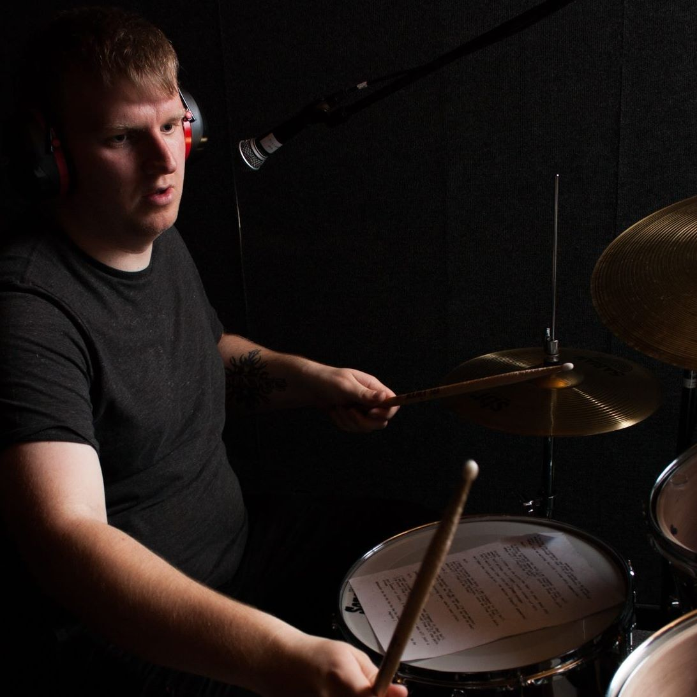

Hobby
Percussie
-
Start Percussie
Al van kinds af aan speel ik percussie. Op mijn zesde kreeg ik mijn eerste drum en ik ben sindsdien niet meer gestopt. Mijn laatst aangekochte drum dateert van 2016.
-
Harmonie Hasselt
Ik speelde 5 jaar lang voor de harmonie van Hasselt. Na die 5 jaar heb ik nog een paar concerten mee gespeeld voor de harmonie. Dit waren voornamelijk galaconcerten. Een vaste bezetting heb ik sindsdien niet meer aangenomen.
http://www.khh.be -
Bands
Na de harmonie ging mijn interesse ook meer uit naar het spelen in bands. Optredens zijn er helaas nog niet geweest, maar wat niet is kan nog altijd komen. De eerste band waarin ik speelde was “Bridges To Burn”. Een band die ik had opgericht met kameraden, maar dit was meer voor de fun. Na Bridges To Burn heb ik de band “Orthygia” opgericht met mijn vader als gitarist. Dit hebben we professioneler proberen aanpakken, maar is uiteindelijk ook geëindigd in 2018 door tijdsgebrek. Het blijft een droom van mij om ooit als drummer een album uit te brengen met een band, alsook optredens te mogen geven.
-
Timpana
Tot voor kort speelde ik terug bij een drumband genaamd “Timpana”. Timpana werd opgericht met een visie om nieuwe mensen op te leren en het maximum van hun talent eruit te halen. Het is de bedoeling van dirigent “Kris Vanelderen” om zoveel mogelijk optredens te doen. Om uiteindelijk ook grote optredens te doen en als daar het winnen van een prijs van komt is dit natuurlijk mooi meegenomen.